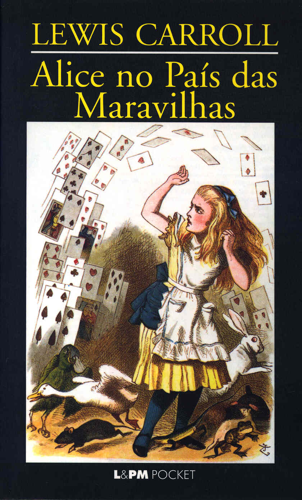
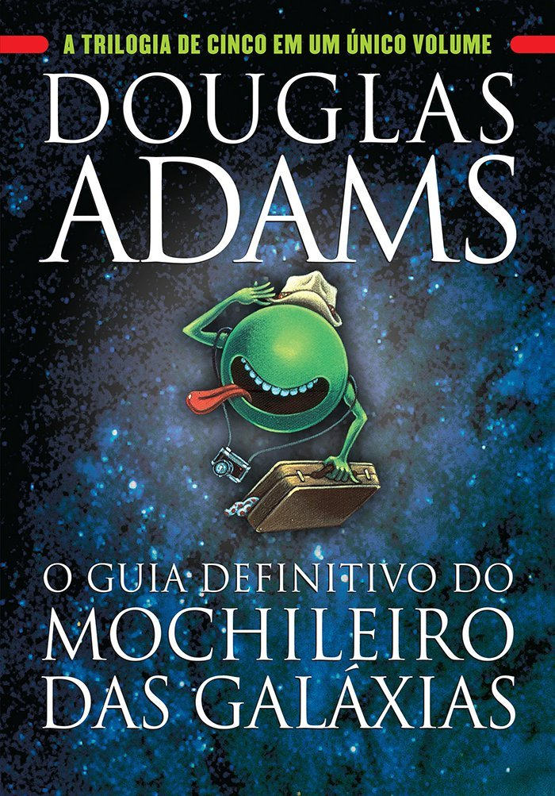

Estante de Livros
Sua biblioteca à um clique de distância
Sumário:
- Harry Potter e a Pedra Filosofal
- O Senhor dos Anéis: A sociedade do Anel
- Percy Jackson e o Ladrão de Raios
- Alice no País das Maravilhas
- O Guia do Mochileiro das Galáxias
Harry Potter e a Pedra Filosofal

Sinopse
Harry Potter nunca tinha ouvido falar em Hogwarts até o momento em que as CARTAS começam a aparecer no capacho do número 4 da rua dos Alfeneiros.
Endereçadas com um LACRE PÚRPURA, elas são repidamente confiscadas por seus tios TERRÍVEIS. E então, no décimo primeiro aniversário de Harry,
um homem GIGANTESCO com olhos luzindo como besouros negros chamado RÚBEO HAGRID entra intempestivamente com uma notícia ASSOMBROSA:
Harry Potter é um bruxo e tem uma vaga na ESCOLA DE MAGIA E BRUXARIA DE HOGWARTS. Uma aventura inacreditável está para começar!
Fonte: Google Books
| Data da primeira publicação |
Autor |
Idioma Original |
Gêneros |
| 26 de junho de 1997 |
J.K. Rowling |
Inglês |
Romance, Literatura infantil, Literatura fantástica, Alta fantasia |
O Senhor dos Anéis: A sociedade do Anel

Sinopse
A imaginação prodigiosa de J.R.R. Tolkien e seu conhecimento profundo das antigas mitologias da Europa permitiram que ele criasse um universo tão complexo e convincente quanto o
mundo real. A Sociedade do Anel começa no Condado, a região rural do oeste da Terra-média onde vivem os diminutos e pacatos hobbits. Bilbo Bolseiro, um dos raros aventureiros desse povo,
cujas peripécias foram contadas em O Hobbit, resolve ir embora do Condado e deixa sua considerável herança nas mãos de seu jovem parente Frodo. O mais importante legado de Bilbo
é o anel mágico que costumava usar para se tornar invisível. No entanto, o mago Gandalf, companheiro de aventuras do velho hobbit, revela a Frodo que o objeto é o Um Anel,
a raiz do poder demoníaco de Sauron, o Senhor Sombrio, que deseja escravizar todos os povos da Terra-média. A única maneira de eliminar a ameaça de Sauron é destruir o Um Anel
nas entranhas da própria montanha de fogo onde foi forjado. A revelação faz com que Frodo e seus companheiros hobbits Sam, Merry e Pippin deixem a segurança do Condado e iniciem uma
perigosa jornada rumo ao leste. Ao lado de representantes dos outros Povos Livres que resistem ao Senhor Sombrio, eles formam a Sociedade do Anel. Alguém uma vez disse que o mundo dos
leitores de língua inglesa se divide entre os que já leram O Senhor dos Anéis e os que um dia lerão o livro. Com esta nova tradução da obra, o fascínio dessa aventura atemporal ficará
ainda mais evidente para os leitores brasileiros, tanto os que já conhecem a saga como os que estão prestes a descobrir seu encanto.
Fonte: Google Books
| Data da primeira publicação |
Autor |
Idioma Original |
Gêneros |
| 28 de julho de 1954 |
J.R.R. Tolkien |
Inglês |
Literatura fantástica |
Percy Jackson e o Ladrão de Raios

Sinopse
Os deuses do Olimpo continuam vivos, em pleno século XXI! Eles ainda se apaixonam por mortais e têm filhos que podem se tornar grandes heróis, mas que acabam,
na maioria das vezes, encontrando destinos terríveis nas garras de monstros sem coração. Apenas alguns descobrem sua identidade e conseguem chegar ao Acampamento Meio-Sangue,
um acampamento de verão em Long Island dedicado ao treinamento de jovens semideuses. Essa é a revelação que leva Percy Jackson a uma incrível busca para ajudar seu verdadeiro
pai - o deus dos mares! -, a evitar uma guerra no Olimpo. Com a ajuda do sátiro Grover Underwood e de Annabeth Chase, uma filha de Atena, Percy é encarregado de cruzar os Estados
Unidos para capturar o ladrão que roubou a mais poderosa arma de destruição já concebida: o raio mestre de Zeus. No caminho, eles enfrentam uma horda de inimigos mitológicos
determinados a detê-los. Em meio aos perigos dessa jornada, Percy precisa confrontar um pai que ele não conhece e se precaver de uma cruel traição.
Fonte: Google Books
| Data da primeira publicação |
Autor |
Idioma Original |
Gêneros |
| 28 de junho de 2005 |
Rick Riordan |
Inglês |
Mitologia grega, Romance, Quadrinhos, Romance gráfico, Ficção juvenil, Literatura fantástica. |
Alice no País das Maravilhas

Sinopse
Quem não se lembra do Coelho Branco, do Gato de Cheshire, da Lebre de Março, do Chapeleiro Maluco, da Rainha de Copas... e da incontornável Alice...? As personagens que Lewis
Carroll imortalizou num clássico único para todas as idades. Viaje pelo mundo da imaginação e do nonsense onde tudo é possível!
Fonte: Google Books
| Data da primeira publicação |
Autor |
Idioma Original |
Gêneros |
| novembro de 1865 |
Lewis Carrol |
Inglês |
Literatura infantil, Literatura fantástica, Ficção Absurdista, Fantástico. |
O Guia do Mochileiro das Galáxias

Sinopse
A dupla escapa da destruição da Terra pegando carona numa nave alienígena, graças aos conhecimentos de Prefect, um E.T. que vivia disfarçado de ator desempregado enquanto
fazia pesquisa de campo para a nova edição do Guia do Mochileiro das Galáxias, o melhor guia de viagens interplanetáro.
Mestre da sátira, Douglas Adams cria personagens inesquecíveis e situações mirabolantes para debochar da burocracia, dos políticos, da "alta cultura" e de diversas instituições
atuais. Seu livro, que trata em última instância da busca do sentido da vida, não só diverte como também faz pensar.
Fonte: Google Books
| Data da primeira publicação |
Autor |
Idioma Original |
Gêneros |
| 12 de outubro de 1979 |
Douglas Adams |
Inglês |
Ficção científica, Romance, Humor, Ficção científica cômica, Ficção humorística |